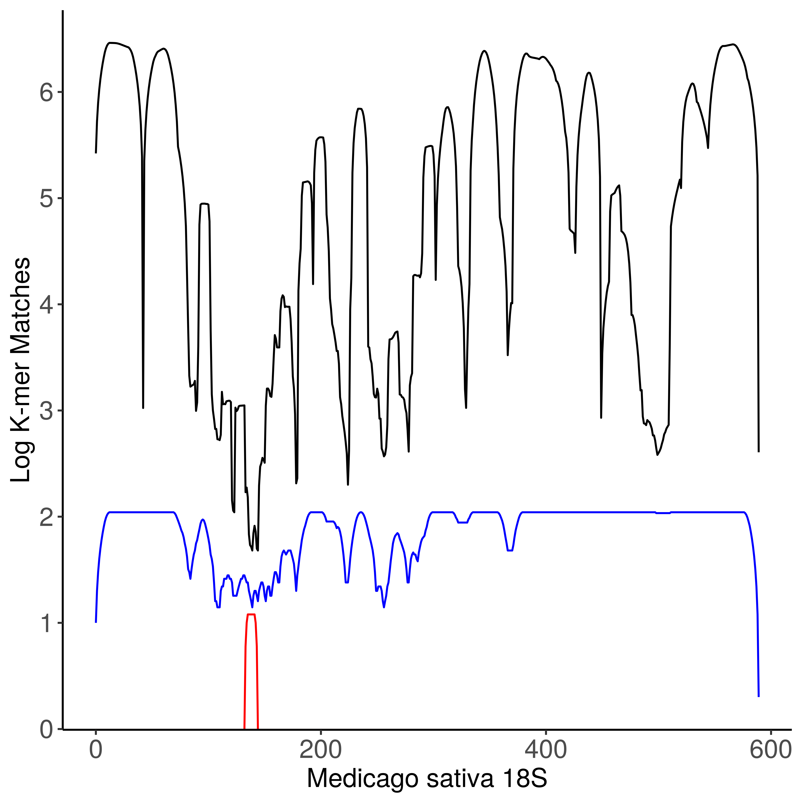

Recapitulating the gPNA¶
Overview of MAPT MAPT, the Microbiome Amplification Preference Tool, is designed to find regions of homology between the host and its microbiome. MAPT has great flexibility, as any FASTA sequence can be used as the target sequence, i.e the sequence that should be blocked. As you can see below, for the gPNA that sequence is Medicago sativa. MAPT users also specify the primers (shown below as the forward and reverse primer as Fprimer and Rprimer. This helps as only organisms that have homology to these primers are amplified in silico. The microbiome sequences can come from SILVA, and can be specified by taxonomy, as well as imported as FASTA sequences. K-mer range is the size that the sequences are fractionated into, such that K-mer range of 9-13 fractionates reads into sizes 9 to 13. By doing so we can identify regions that are ideal for targeting host amplification with oligonucleotides, such as PNAs, that will bind to host DNA and block amplification.
Required Information¶
Explanation of the materials needed (target sequence, sequence file, primers, and k-mer range)
In [1]: import MAPT
In [2]: Medicago_sativa = "GAFF01033989.4391.6188"
In [3]: result_file='data/gPNA.csv'
In [4]: Rprimer="GTGYCAGCMGCCGCGGTAA"
In [5]: Fprimer = "CCGYCAATTYMTTTRAGTTT"
In [6]: krng = (9,13)
In [7]: silva = MAPT.silva_manager(release=132)
In [8]: search = silva.find_taxpath('Fungi')
In [9]: print(search)
[(entry(path=Eukaryota;Opisthokonta;Nucletmycea;Fungi;,taxid=6516,rank=kingdom), 29123)]
Using the silva_manager, we are able to search a local copy of the Silva database. Here, we are able to find the taxonomic path of Fungi and the protist phyla Cercozoa to collect sequences from the Silva database. Now that we have all of our materials, we can begin mapping Fungal k-mers from silva to the 18S of *Medicago sativa *.
Generating K-mer maps¶
In [10]: fungi_path = search[0][0]['path'] #getting the path out of the search results
In [11]: designer_gPNA = MAPT.PNA_Designer(result_file = 'data/gPNA.csv',target_silva_accession = Medicago_sativa, sequence_silva_path = fungi_path, primer_F=Fprimer,primer_R = Rprimer, kmer_range = krng,silva_release = 132)
Amplifying PNA target
Amplifying and Collecting sequence K-mers
WARNING: 2741 sequences failed to amplify, please see attribute "failed_amplification"
Mapping Kmers
Mapping Complete
Results have been written to data/gPNA.csv
MAPT has automatically detected that some of the sequences in the silva data-set failed to find exact primer matches. We can view these sequences by looking at the ‘failed_amplification’ attribute of MAPT.
With our k-mers mapped, we are able to visualize our data! But before we do, we will quickly map the gPNA. While PNAs have a higher affinity to the antiparallel direction, they can also bind in the parallel direction as well. We will allow the PNA to bind in both directions for plotting
Mapping a PNA¶
In [12]: gPNA = "CGGCCGCTACGC"
In [13]: mapping = designer_gPNA.map_PNA(gPNA,antiparallel_only=False)
In [14]: import pandas#pandas is a module for working with dataframe objects in python, highly recommend!
In [15]: pandas.DataFrame(mapping)
Out[15]:
Nucleotide index unique match absolute match PNA mapping
0 G 0 10 42 0
1 G 1 20 102 0
2 T 2 30 152 0
3 C 3 40 248 0
4 G 4 50 726 0
.. ... ... ... ... ...
585 T 585 50 336812 0
586 G 586 40 306868 0
587 A 587 30 262928 0
588 C 588 20 201276 0
589 A 589 10 112182 0
[590 rows x 5 columns]
Now that we have data tables, use your favorite software to make a figure! We will use a custom R script to plot our data.
gPNA and Protist¶
To demonstrate the ease of testing PNA design with other organisms, we can show the gPNA is projected to avoid blocking Protists as well. We rerun the analysis, this time mapping Cercozoa 18S reads to evaluate gPNA blockage of this group of single-celled eukaryotes
In [16]: protist=silva.find_taxpath("Cercozoa")[0][0]['path']#check docs for find_taxpath return
In [17]: designer_gPNA_protist = MAPT.PNA_Designer(result_file='datagPNA_protist.csv', target_silva_accession=Medicago_sativa, sequence_silva_path=protist, primer_F=Fprimer,primer_R=Rprimer,kmer_range=krng,silva_release=132)
Amplifying PNA target
Amplifying and Collecting sequence K-mers
WARNING: 577 sequences failed to amplify, please see attribute "failed_amplification"
Mapping Kmers
Mapping Complete
Results have been written to datagPNA_protist.csv
In [18]: gPNA_protists = pandas.DataFrame(designer_gPNA_protist.map_PNA(gPNA))